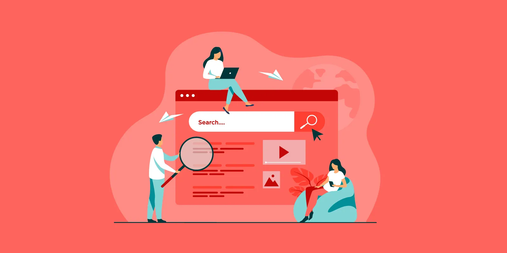
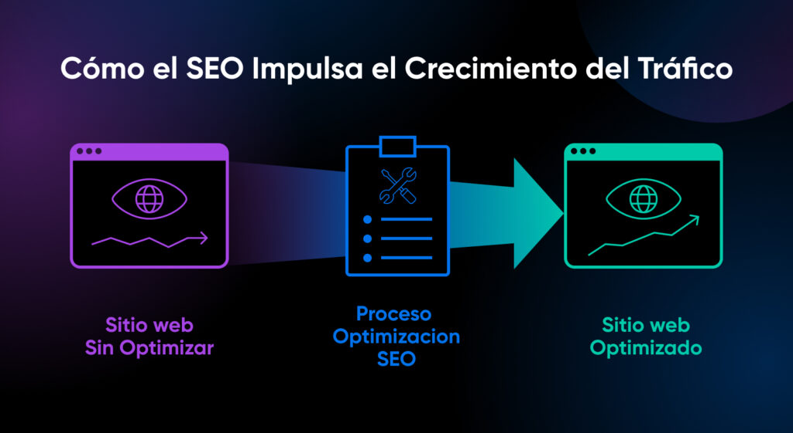
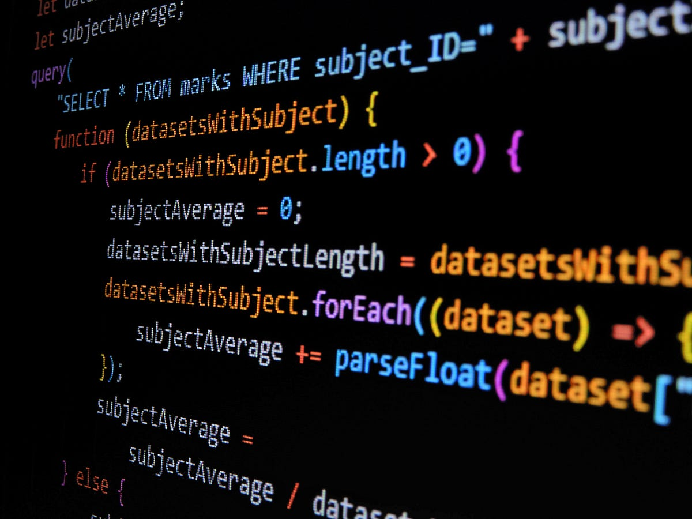

¿Qué es el Tráfico Orgánico?

Es la métrica que define a los usuarios que ingresan a un activo digital de forma autónoma y natural. Ocurre cuando el algoritmo de un motor de búsqueda indexa tu contenido, lo procesa como la mejor respuesta posible a una duda, y el usuario decide hacer clic sin intermediación de pautas publicitarias.
Interactúa con las posiciones de búsqueda para calcular la estimación de clics:
$0.00
Muy Alta
Pilares del Sistema
On-Page Optimization
Contenido semántico estructurado, densidad inteligente de palabras clave y etiquetas meta precisas.

Infraestructura Técnica
Velocidad de carga crítica, renderizado eficiente y adaptabilidad móvil impecable.

Señales de Autoridad
Perfil de enlaces salientes y entrantes (backlinks) que validan la confianza de la plataforma.
Rendimiento a Largo Plazo

Palabras Clave Clave Estratégicas
Las palabras clave (Keywords) representan las intenciones de búsqueda de los usuarios. Dirigir la optimización hacia los términos correctos garantiza capturar el tráfico con mayor probabilidad de conversión.
Tráfico Orgánico
Informativa / Comercial
• qué es tráfico orgánico seo
• cómo aumentar visitas orgánicas
• posicionamiento web natural
• optimización en motores de búsqueda